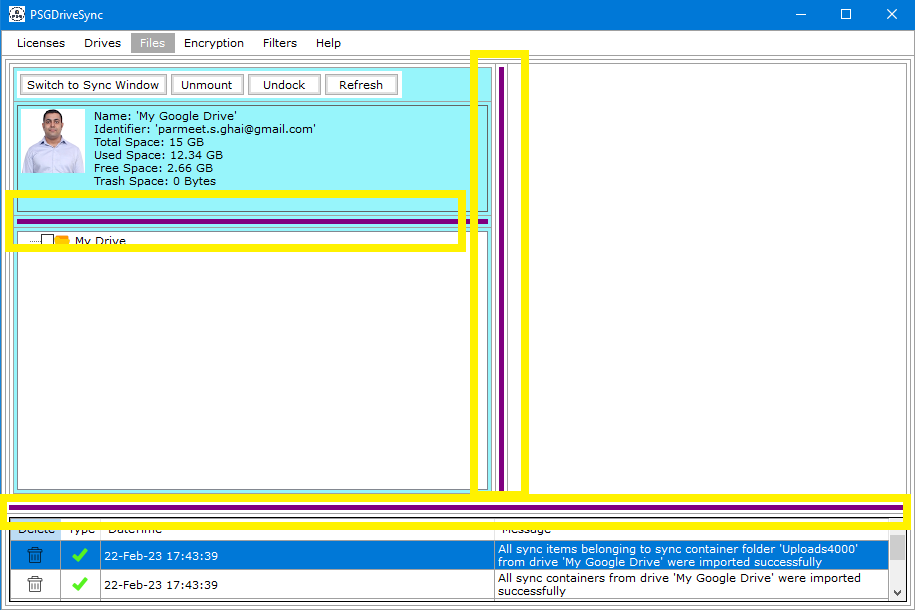

|  |
Every tab or section of the application provides a couple of purple colored resize bars which you can use to resize various components of that section. You just need to place the mouse cursor on top of the resize bar and then while you have the left button pressed, drag the resize bar to its new location. The sensitivity has been set bit high so you don't have to move the mouse that much to resize different panels of a section or tab. |